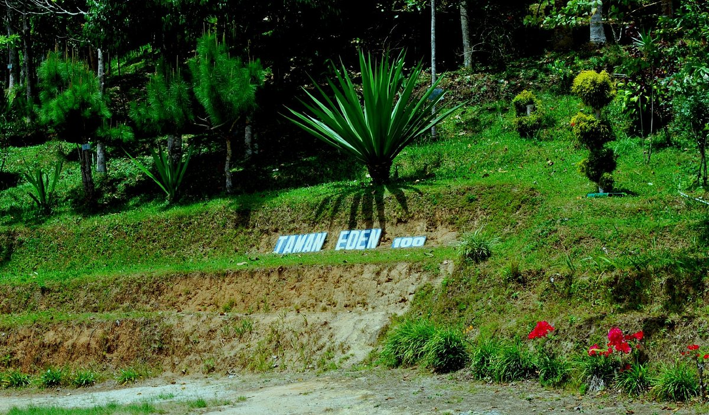

Taman Eden 100

Taman Eden 100 memiliki pesona alam yang indah seperti, air terjun, Goa Kelelawar, Bukit Manja (Lake Toba view), Kebun Anggrek Toba, dan alam bebas. Area ini juga bisa dimanfaatkan untuk trekking dan camping ground. Menurut pantauan tim media center Tobasa, kondisi hutan di taman ini tampak masih alami, kaya akan flora dan fauna, seperti keberadaan harimau Sumatera dan kelelawar. Pendiri Taman Eden 100, Marandus Sirait mengatakan pada saat pembentukannya, taman wisata itu ditanami dengan 100 jenis tanaman, oleh karena itu diberi nama Taman Eden 100. Di taman ini juga dapat kita temukan air terjun yang sangat indah dan airnya sejuk hanya berjarak 500 meter dari pintu pos. Sangat cocok untuk kamu para pencinta alam yang senang berpetualang di alam terbuka dapat mendaki Gunung Sipangulubao dan Bukit Manja. Biaya Tiket masuk Rp 10.000, Parkir Mobil Rp 10.000 Parkir Motor Rp 5.000 rute yang dapat kamu tempuh Melalui Darat Perjalanan ke lokasi dapat ditempuh sekitar 24 menit dari Parapat dengan jarak 16,3 kilometer.